Hey folks,
I’m a fond user of Azure DevOps for testing application builds, running CI/CD pipelines to publish Azure demo scenarios and train our Microsoft global customers on it every few weeks out of AZ-400 training deliveries.
One of the lesser-known, yet AWESOMELY POWERFUL features besides ‘running pipelines’ is Azure Boards, providing an end-to-end project methodology platform using Scrum, Agile, CMMI or custom approach.
In this post, I mainly wanted to zoom in on the custom capabilities, capturing feedback from employees - which got entered through an Office Forms form, picked up by Azure Logic Apps, and stored in a customized Azure Boards Work Item.
In short, the following steps are needed:
- Create custom Office Forms with questions and fields to complete
- Create custom Azure DevOps Process Methodology containing the custom Work Item fields and form layout
- Create new Azure DevOps Project, linked to the custom Project Methodology
- Create Azure Logic Apps flow, mapping each custom field from Office Forms to the custom Work Item fields
- See it in action :)
Here we go…
Create custom Office Forms with questions and fields to complete
The first step involves creating a custom Office Form, which is probably one of the easiest parts in the process. This is a free service within Microsoft Office Online, typically used for collecting user input, such as surveys, quizzes and polls, and all you need is a Microsoft Account such as Outlook.com, Hotmail.com or an organizational Office 365 account.
- Browse to https://forms.office.com, and select New Form
- Next, specify the different questions, together with the answer type (e.g. multiple choice, text field,…) I won’t cover the details on how to do this, as I think it’s self-explanatory.
- A sample form I’ll be using in this post looks like this:
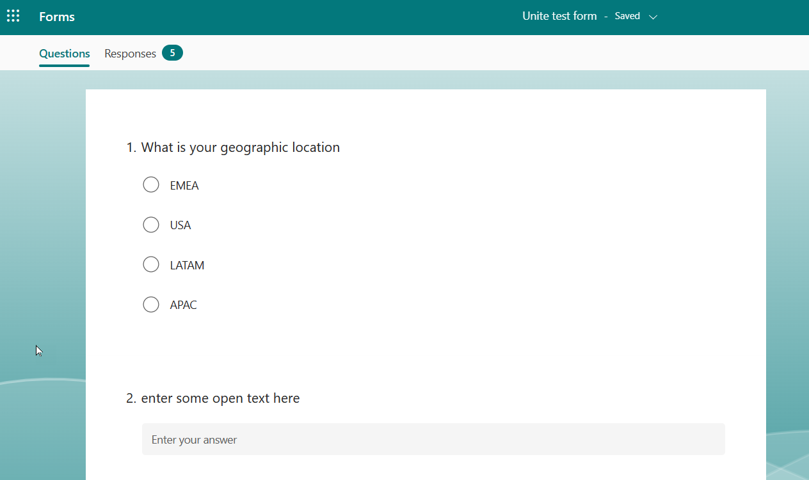
With the Office Form ready, we can move on to the next step, creating a new custom ADO Process Methodology.
Create custom Azure DevOps Process Methodology
Azure DevOps provides several Process Methodologies, such as Scrum, Agile, Basic, but also allows you to create customized versions of those. (More info on each process and how to choose is documented on Microsoft Learn).
- Log on to Azure DevOps with an Organizational admin account
- Select Azure DevOps (the logo in the upper left corner), and select Organization Settings
- Within the Settings menu, select Process under the Boards section
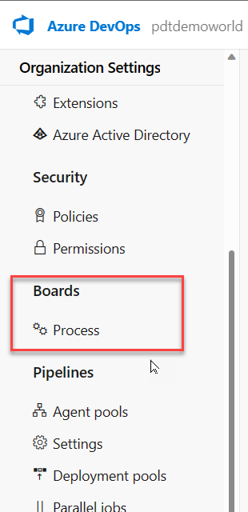
- This shows a list of default Azure Boards processes (Basic, Agile, Scrum, CMMI)
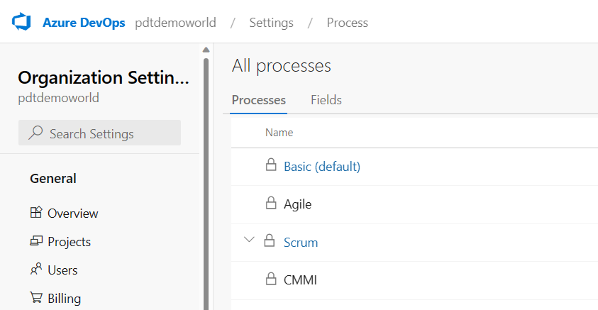
- In this example, we will build a new custom deviation from the Scrum process, but you can choose any you want. Hover the mouse over the Scrum process, and select the ellipsis (the 3 dots). From the context menu, select Create inherited process
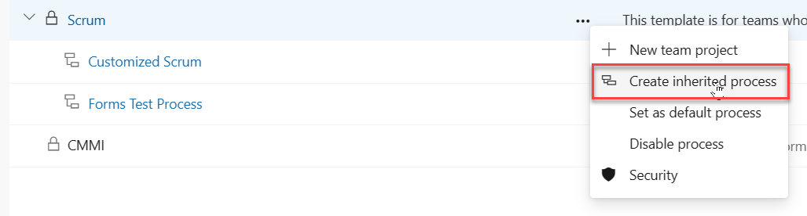
- Provide a name and (optional) description for the process. I called mine Forms Test Process
- Once created, select the new process. This opens a list of Work Item types such as Bug, Epic, Task and other. As the new Work Item we create is so custom, it doesn’t really matter which one to choose. If you have about 50% or more that’s identical to an existing Work Item, you can use that as a baseline.
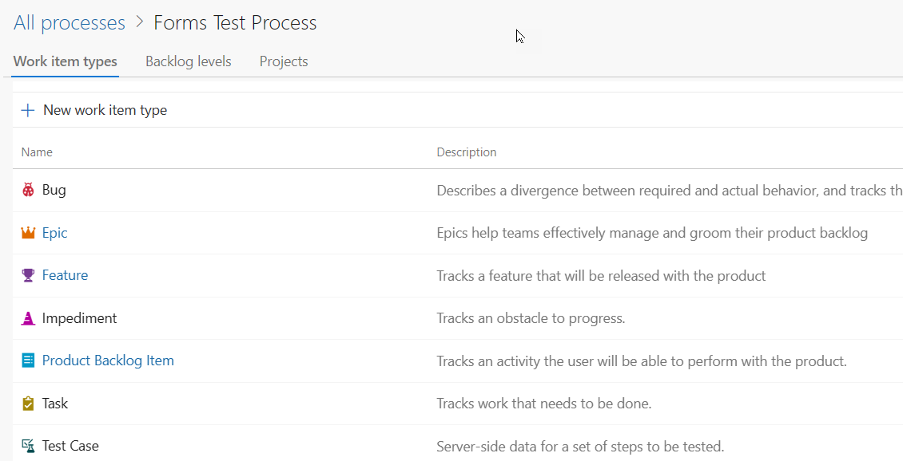
- Click New Work Item Type
- Provide a Name, Description, Icon, Icon Color of choice. Confirm by pressing the Create button.
- Once created, select the new work item type. This opens the Layout editor, where we will add custom fields, reflecting the different questions/items from the Office Form earlier.
- A Work Item is based on Tabs. In my example, I only use a single tab, called Details. Know you can as many Tabs as needed. Within each Tab, the Work Item layout is built-up of 3 panes, a left, holding a Description field, the middle pane, holding Custom fields, and the right pane, which has Deployment, Development and Related Work as default items - at least in my setup.
- Add the custom fields you want to have on the Work Item, specifying the field type (e.g. I added an open question, set as Text Multiple Lines, as well as adding the Geography and Category as Text Single Line items). These fields somewhat correspond with the different items on the Office Form.
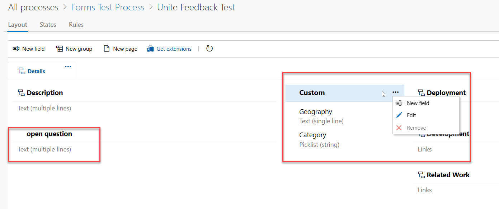
Although there are a lot more customizations possible, I hope these basic steps are helping you building the baseline for what I want to guide you through in this post.
We now have the Azure DevOps Process created, as well as the customized version of the Work Item we want to use. Let’s hook this up to a new Azure DevOps Project.
Create new Azure DevOps Project, linked to the custom Process
- Click the Azure DevOps logo (upper left corner), and press the + New Project button.
- Provide a Project Name, (optional) Description, Visibility. Next, click Advanced to specify the Work Item Process. Click the Work Item Process field and select the custom process created earlier.
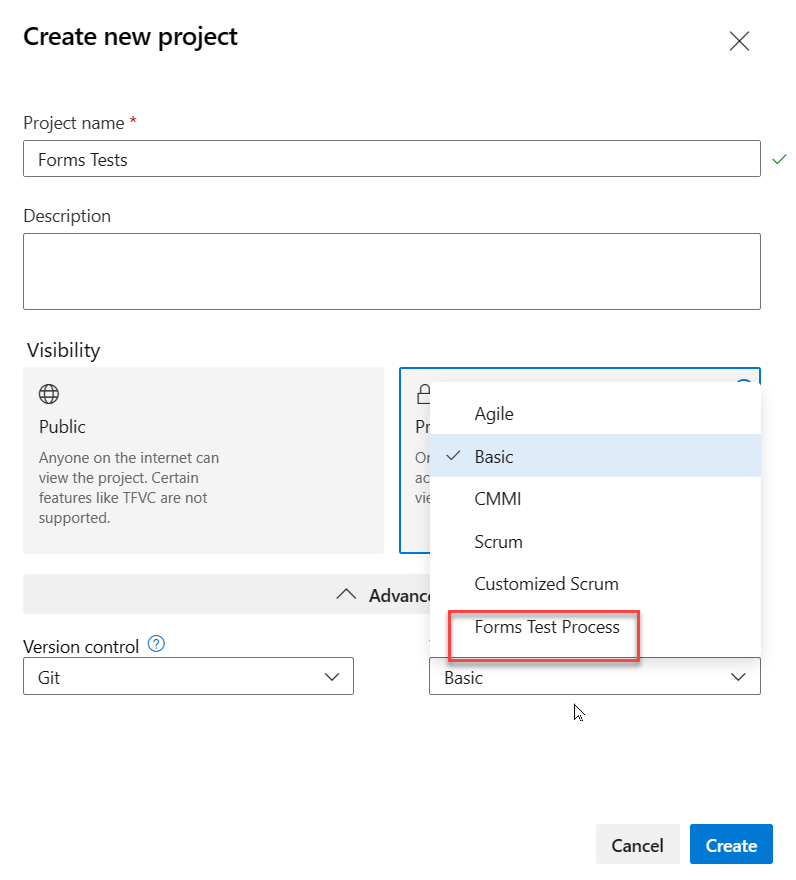
- Once the project got created, navigate to Boards. Here, click New Work Item, notice the new Work Item type is available.
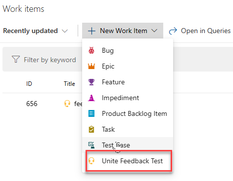
- Select the new Work Item, which shows the detailed view. Notice the custom fields we added earlier are nicely showing up here.
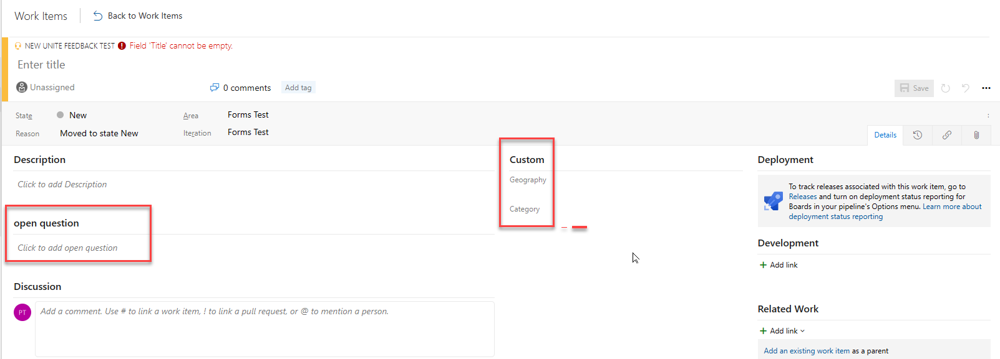
The flexibility we now have, is that the Work Item can be created from both the Office Form, as well as still being available from within Azure DevOps. (Note: while we added custom fields, I didn’t add any field content to choose from, such as EMEA,APAC,USA in the Geography field - which would a viable option). In my use case, the only way to create a new Work Item is through the Office Form, as no typical users got access to Azure DevOps to do that (Permissions :)).
Awesome, we are now about 3/4 through the process, with the remaining part being the creation of the flow, using Azure Logic Apps.
Create an Azure Logic App flow to capture Office Forms data to ADO Work Item
- Log on to Azure with administrative permissions to create an Azure Logic App resource.
- When creating the Logic App, specify a unique name, Resource Group, Location and Plan (consumption would be OK).
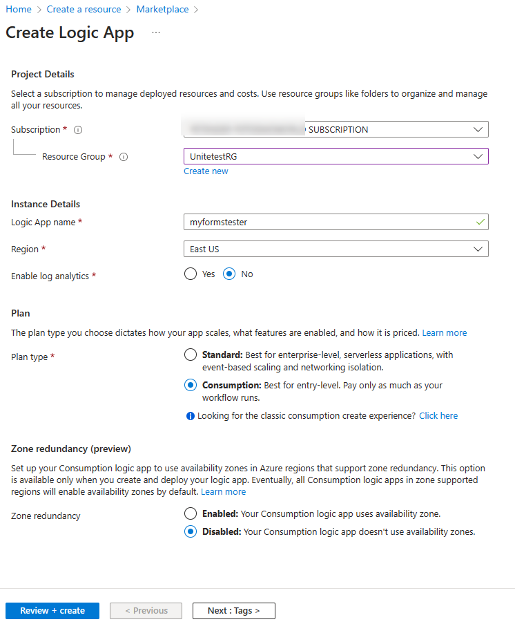
- Once the resource got created, it automatically opens Logic App Designer, which allows for the setup of the actual flow. From the list of sample scenarios, select Blank Logic App.
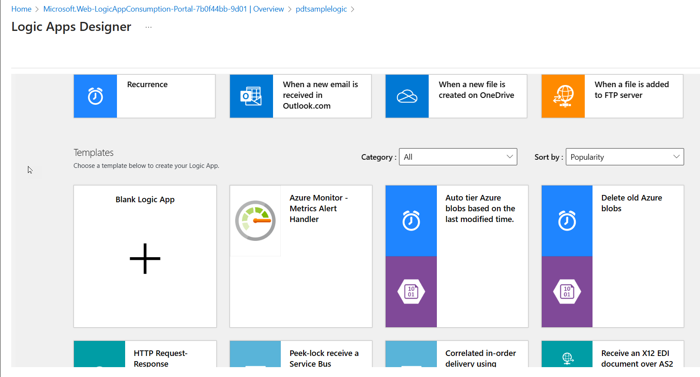
- In the Search connectors and triggers field, search for Microsoft Forms.
- Next, select When a new response is submitted as trigger.
- In the Form Id field, select the Office Form name you used earlier.
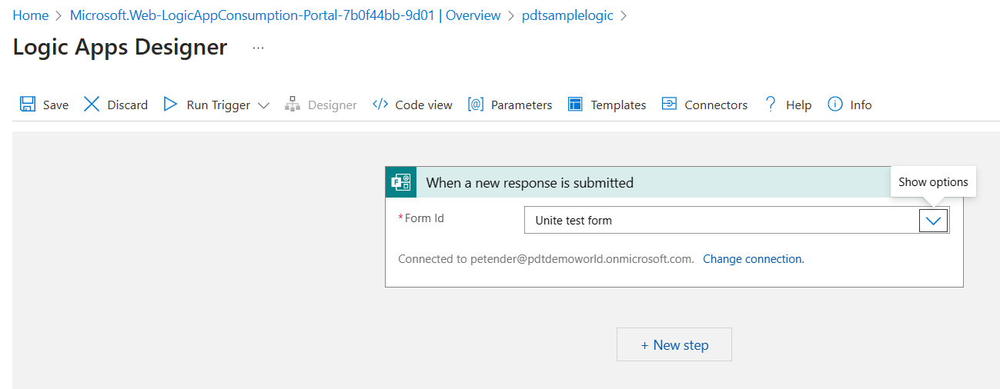
- Click + New Step to add the next step in the Logic App flow.
- In the Search connectors and triggers field, search for Azure DevOps.
- From the list of Actions, select Create a new work item.
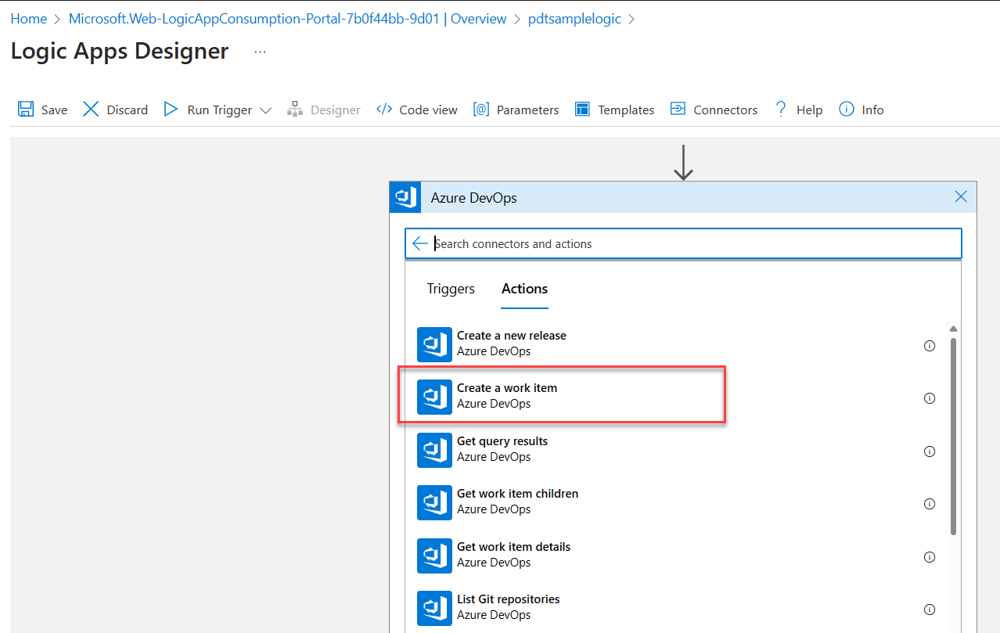
- Complete the fields, selecting your DevOps Organization, the DevOps Project and the Work Item Type as created earlier.
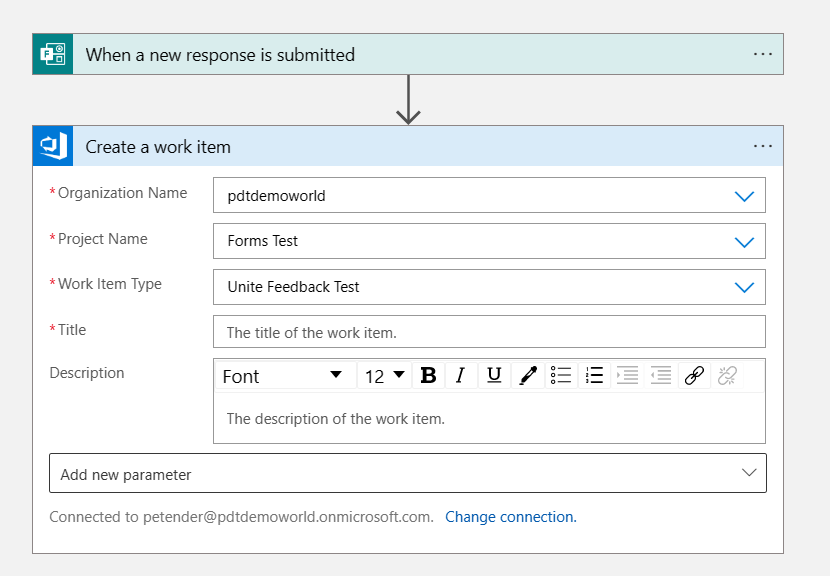
- Now, we map the custom fields, by selecting Add new parameter, and selecting Other Fields.
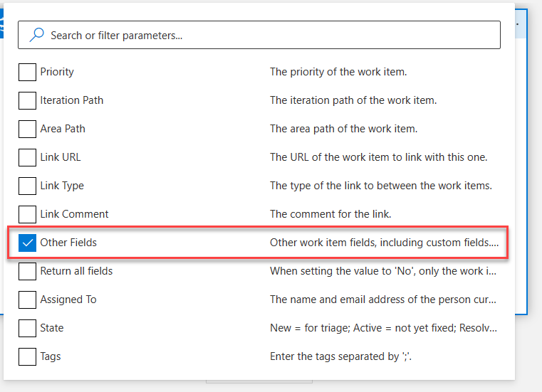
- Within the little table of Other Fields (the key/value), select the Key object; this opens the Logic Apps Dynamic Content. Here, click the See more option

- This is where Logic Apps is awesome. It allows you to select (all) previous fields from all previous steps in the flow process.
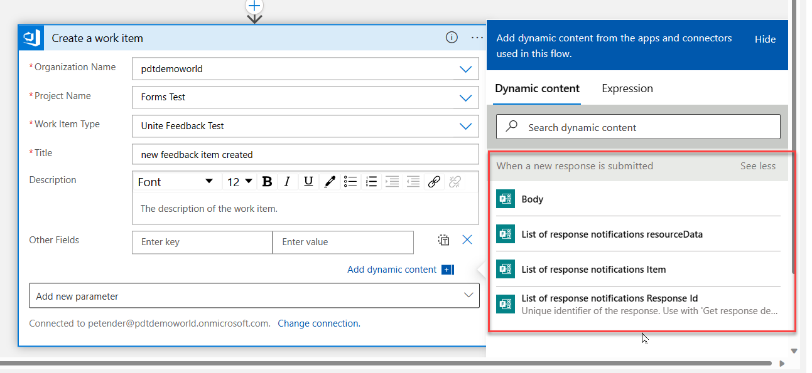
- Notice how the Forms information is returned as Body, which is not what we need. We want to reach out each answer to each Form’s question, instead of the full body. To make this possible, we have to add another step in-between the Forms step and the Azure DevOps step.
- Click on the + sign in-between both steps, and select Add New Action. Search for Microsoft Forms again. This time, it will show an action called Get Response Details.
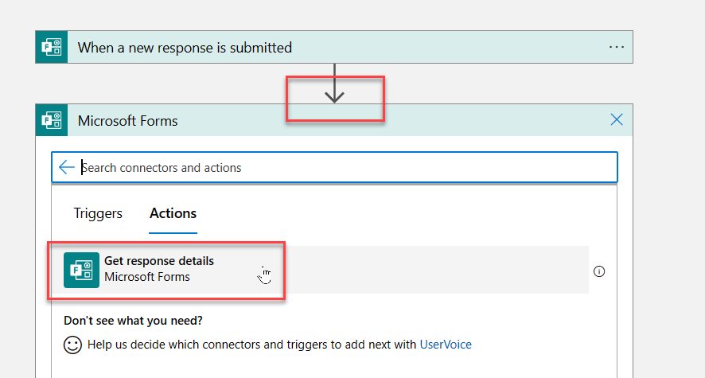
- In the Forms Id field, select the name of the Office Forms; In the Response Id field, click See More and select List of Response notifcations Response id from the Dynamic Content list of options.
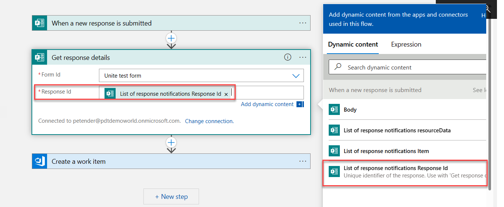
- With that step added, return to the Create a work item step in the Logic App Flow, and navigate to the Other Fields section in the parameters. Select the Enter Key field, which opens the Dynamic Content blade again. This time, notice how the different response details (the Form’s questions) are visible.
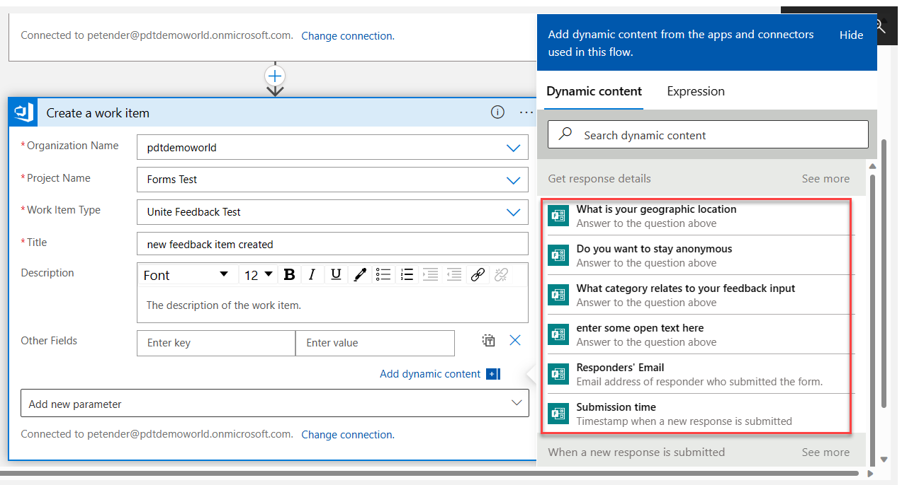
- From here, the idea is that you ‘map’ each custom field object from the ADO Work Item, with a corresponding value from the Office Forms. For example, the work item “geography” created earlier, maps with what is your geography question I have on the form.
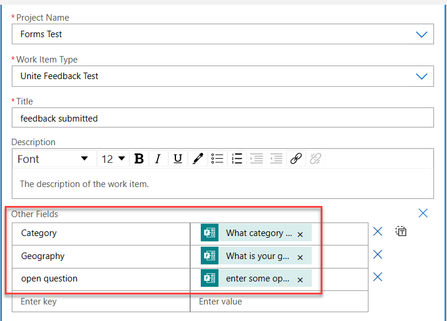
- Once done with all field mappings, Save the Logic App.
This completes the configuration of the Azure Logic Apps (Note: there is more work needed if you have more fields…)
Which brings us to the last step… seeing it in action…
Testing the Azure DevOps Work Item creation
- Return to the Office Form, and click Collect Responses.
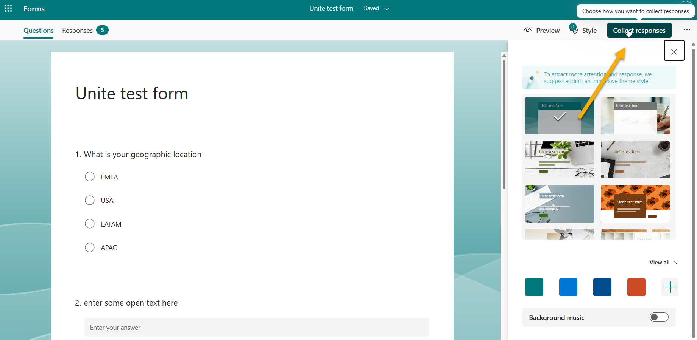
- Complete the different questions and fields on the Form.
- Wait for about a minute, and return to the Azure Logic Apps flow created earlier. From the Overview blade, navigate to Runs History.
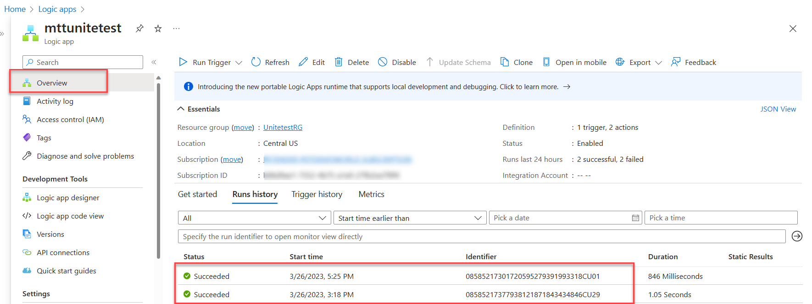
- The Forms completion resulted in a successful workflow trigger. Select the line, which opens a more detailed view.
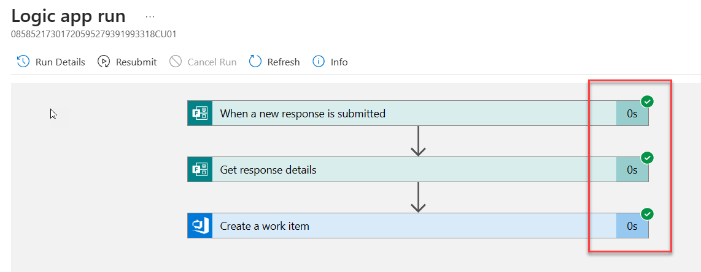
. - Last, return to the Azure DevOps Project, navigate to Boards and open Work Items. Notice the newly created Work Item.
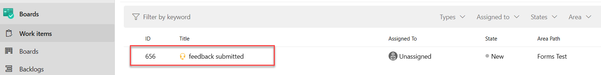
- Open the item, to see how the custom fields got completed.
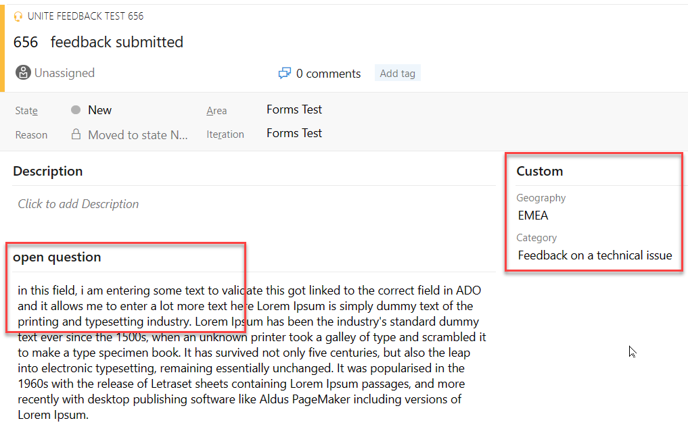
That’s pretty much it!! Nice isn’t it…
Summary
In this post, I wanted to share more details on how you can allow end-users (or customers) to create Azure DevOps Work Items (of pretty much any type with any custom fields), using an integration of Microsoft Forms and Azure Logic Apps.
Don’t hesitate reaching out if you have any additional questions on this, or if you want to share how you used this in your own scenarios.

Cheers!!
/Peter